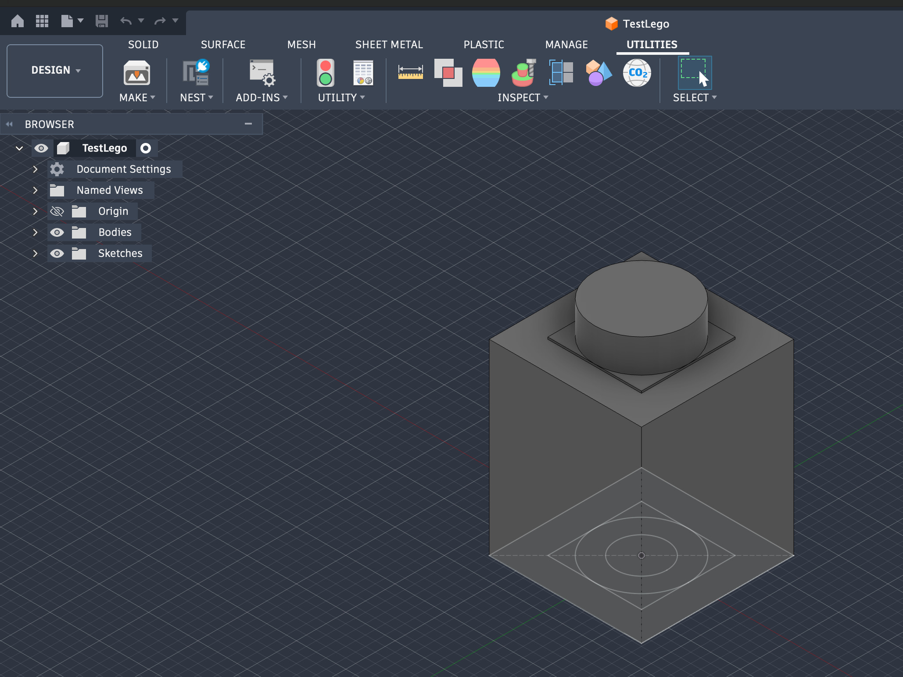
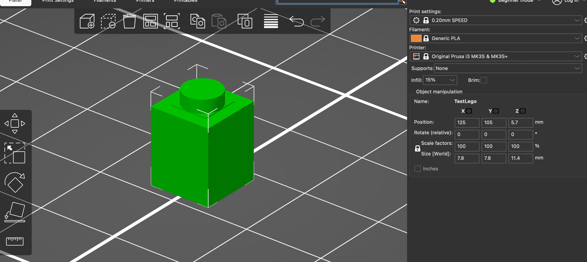
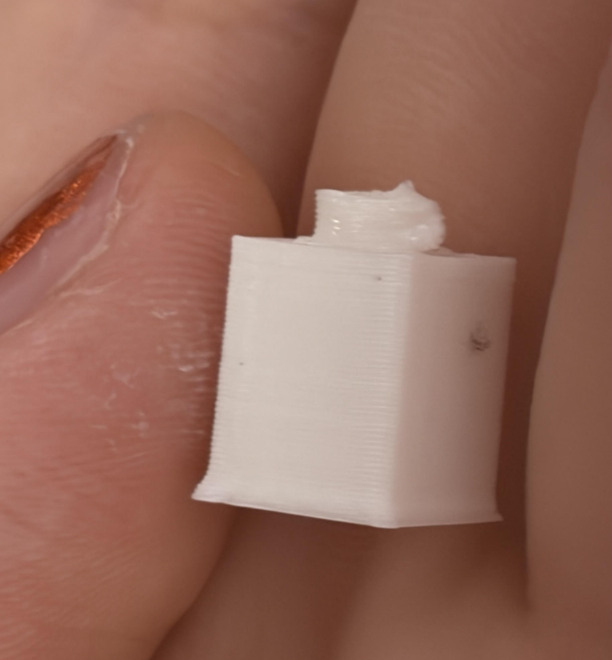
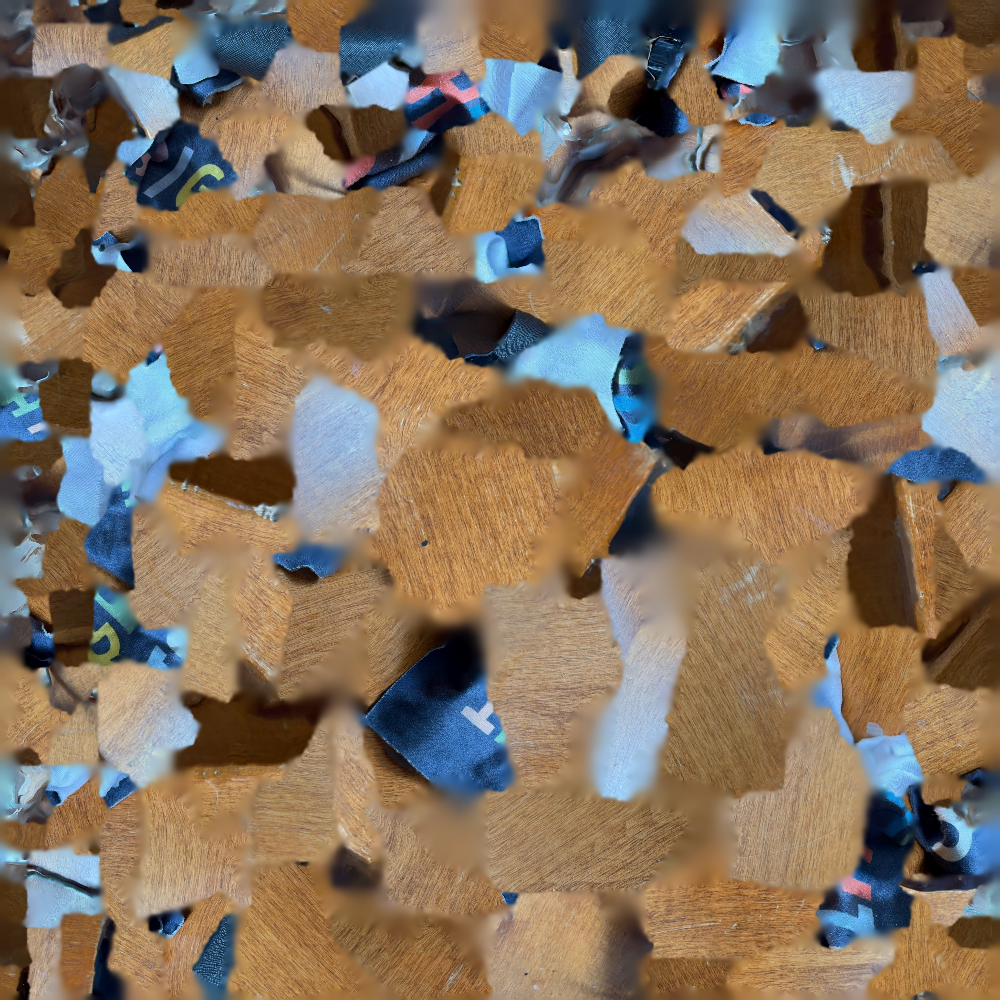

Design and print something that cannot be made easily through subtractive methods. Include a Fusion file (eg. .f3z), STL of your object, and sliced gcode in your documentation.
This is my G code from Prusa a link to download a file.

I realized that many people used a video tutorial on day 2 to make a lego brick. Because I did not do that, for my 3D printing I wanted to do one. I searched a video online for a 1x1 lego instead though, since I didn't want to do something everyone else already has, and created the image above.

Getting the file onto Prusa was really quick, and with Victor as a guide everything went smoothly. There was a time when i didn't know that I should have clicked 'splice code' to get my G code, but other than that I was able to get the rest done.

I made the little thing in labs, but I forgot to put it into the photos until a few days later. I was able to do so quickly and without problems, thanks to the many previous fails.

I originally wanted to scan my arm in a fist to prep for my final project. I first used RealityScan in Hannah's recommendation, but it was really unefficient for me. Then after hearing what some other people did, I tried KIRI Engine and it worked out a lot better than I expected. I don't know how to put the scanning file in, so I'll put a photo to say I tried it.
My working progress with 3D scanning is as follows; I started with RealityScan, trying to use my arm. I asked Gurmani to talk pictures for me, and experimented with dark and light backgrounds. After all the images processed either downright unrecognizeable or adequate, I tried other objects, lie my headphones or a cable. Then I used KIRI, and scanned my glasses cleaning cloth, and I got it in one go.